Lecciones de circuitos eléctricos - Volumen IV
Capítulo 7
ÁLGEBRA BOOLEANA
- Introduction
- Boolean arithmetic
- Boolean algebraic identities
- Boolean algebraic properties
- Boolean rules for simplification
- Circuit simplification examples
- The Exclusive-OR function
- DeMorgan's Theorems
- Converting truth tables into Boolean expressions
0 + 0 = 0
0 + 1 = 1
1 + 0 = 1
1 + 1 = 1
Reglas de suma para cantidades booleanas
"¡Vaya Toto, no creo que estemos más en Kansas!"
dorotea, enEl mago de Oz
Introduction
Las reglas matemáticas se basan en los límites definitorios que ponemos a las cantidades numéricas particulares que tratamos. Cuando decimos que 1 + 1 = 2 o 3 + 4 = 7, estamos implicando el uso de cantidades enteras: los mismos tipos de números que todos aprendimos a contar en la educación primaria. Lo que la mayoría de la gente supone que son reglas aritméticas evidentes, válidas en todo momento y para todos los propósitos, en realidad dependen de cómo definimos que es un número.
Por ejemplo, al calcular cantidades en circuitos de CA, encontramos que las cantidades numéricas "reales" que nos sirvieron tan bien en el análisis de circuitos de CC son inadecuadas para la tarea de representar cantidades de CA. Sabemos que los voltajes se suman cuando se conectan en serie, pero también sabemos que es posible conectar una fuente de CA de 3 voltios en serie con una fuente de CA de 4 voltios y terminar con un voltaje total de 5 voltios (3 + 4 = 5). ¿Significa esto que se han violado las reglas inviolables y evidentes de la aritmética? No, simplemente significa que las reglas de los números "reales" no se aplican a los tipos de cantidades que se encuentran en los circuitos de CA, donde cada variable tiene tanto una magnitud como una fase. En consecuencia, debemos utilizar un tipo diferente de cantidad u objeto numérico para los circuitos de CA (complejonúmeros, en lugar derealnúmeros), y junto con este sistema diferente de números viene un conjunto diferente de reglas que nos dicen cómo se relacionan entre sí.
Una expresión como "3 + 4 = 5" no tiene sentido dentro del alcance y la definición de números reales, pero encaja muy bien dentro del alcance y la definición de números complejos (piense en un triángulo rectángulo con lados opuestos y adyacentes de 3 y 4, con una hipotenusa de 5). Debido a que los números complejos son bidimensionales, pueden "sumarse" entre sí trigonométricamente, algo que los números "reales" unidimensionales no pueden.
La lógica es muy parecida a las matemáticas en este sentido: las llamadas "leyes" de la lógica dependen de cómo definimos qué es una proposición. El filósofo griego Aristóteles fundó un sistema de lógica basado únicamente en dos tipos de proposiciones: verdaderas y falsas. Su definición bivalente (de dos modos) de la verdad condujo a las cuatro leyes fundamentales de la lógica: la Ley de Identidad (A es A); la Ley de No Contradicción (A no es no-A); la Ley del Medio Excluido (ya sea A o no A); y la Ley de Inferencia Racional. Estas llamadas Leyes funcionan dentro del alcance de la lógica donde una proposición se limita a uno de dos valores posibles, pero pueden no aplicarse en los casos en que las proposiciones pueden contener valores distintos de "verdadero" o "falso". De hecho, se ha trabajado y se sigue trabajando mucho en torno a los conceptos "multivalorados" odifusoLógica, donde las proposiciones pueden ser verdaderas o falsas.en un grado limitado. En tal sistema de lógica, "leyes" como la Ley del Medio Excluido simplemente no se aplican, porque se basan en el supuesto de bivalencia. Asimismo, muchas premisas que violarían la ley de no contradicción en la lógica aristotélica tienen validez en la lógica "borrosa". Nuevamente, los límites que definen los valores proposicionales determinan las leyes que describen sus funciones y relaciones.
El matemático inglés George Boole (1815-1864) buscó dar forma simbólica al sistema lógico de Aristóteles. Boole escribió un tratado sobre el tema en 1854, tituladoUna investigación de las leyes del pensamiento en las que se basan las teorías matemáticas de la lógica y las probabilidades, que codificó varias reglas de relación entre cantidades matemáticas limitadas a uno de dos valores posibles: verdadero o falso, 1 o 0. Su sistema matemático pasó a ser conocido como álgebra de Boole.
Todas las operaciones aritméticas realizadas con cantidades booleanas tienen sólo uno de dos resultados posibles: 1 o 0. No existe "2", "-1" o "1/2" en el mundo booleano. Es un mundo en el que todas las demás posibilidades son inválidas por decreto. Como se podría suponer, este no es el tipo de matemáticas que desea utilizar al equilibrar una chequera o calcular la corriente a través de una resistencia. Sin embargo, Claude Shannon, famoso en el MIT, reconoció cómo el álgebra booleana podría aplicarse a circuitos de encendido y apagado, donde todas las señales se caracterizan como "altas" (1) o "bajas" (0). Su tesis de 1938, tituladaUn análisis simbólico de circuitos de conmutación y relés, puso en práctica el trabajo teórico de Boole de una manera que Boole nunca hubiera imaginado, brindándonos una poderosa herramienta matemática para diseñar y analizar circuitos digitales.
En este capítulo, encontrará muchas similitudes entre el álgebra booleana y el álgebra "normal", el tipo de álgebra que involucra los llamados números reales. Sólo tenga en cuenta que el sistema de números que define el álgebra booleana está muy limitado en términos de alcance, y que sólo puede haber uno de dos valores posibles para cualquier variable booleana: 1 o 0. En consecuencia, las "leyes" del álgebra booleana a menudo difieren de las "leyes" del álgebra de números reales, lo que hace posibles afirmaciones como 1 + 1 = 1, que normalmente se considerarían absurdas. Una vez que se comprende la premisa de que todas las cantidades en el álgebra de Boole están limitadas a las dos posibilidades de 1 y 0, y el principio filosófico general de las leyes que dependen de definiciones cuantitativas, el "sinsentido" del álgebra de Boole desaparece.
Debe entenderse claramente que los números booleanos no son lo mismo quebinarionúmeros. Mientras que los números booleanos representan un sistema matemático completamente diferente al de los números reales, el binario no es más que una alternativa.notaciónpara números reales. Los dos a menudo se confunden porque tanto la matemática booleana como la notación binaria usan los mismos dos cifrados: 1 y 0. La diferencia es que las cantidades booleanas están restringidas a un solo bit (ya sea 1 o 0), mientras que los números binarios pueden estar compuestos de muchos bits que se suman en forma ponderada por lugar a un valor de cualquier tamaño finito. El número binario 100112("diecinueve") no tiene más lugar en el mundo booleano que el número decimal 210("dos") o el número octal 328("veintiséis").
Boolean arithmetic
Comencemos nuestra exploración del álgebra booleana sumando números:
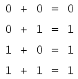
Las primeras tres sumas tienen mucho sentido para cualquiera que esté familiarizado con la suma elemental. Sin embargo, la última suma es muy posiblemente responsable de más confusión que cualquier otra afirmación en electrónica digital, porque parece ir en contra de los principios básicos de las matemáticas. Bueno, esohacecontradicen los principios de la suma para números reales, pero no para números booleanos. Recuerde que en el mundo del álgebra booleana, sólo hay dos valores posibles para cualquier cantidad y para cualquier operación aritmética: 1 o 0. No existe el "2" dentro del alcance de los valores booleanos. Dado que la suma "1 + 1" ciertamente no es 0, debe ser 1 por proceso de eliminación.
Tampoco importa cuántos o pocos términos sumamos. Considere las siguientes sumas:
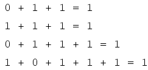
Observe de cerca las sumas de dos términos en el primer conjunto de ecuaciones. ¿Te resulta familiar ese patrón? ¡Debería! Es el mismo patrón de unos y ceros que se ve en la tabla de verdad para una puerta OR. En otras palabras, la suma booleana corresponde a la función lógica de una puerta "O", así como a los contactos de conmutación en paralelo:
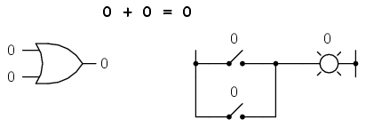
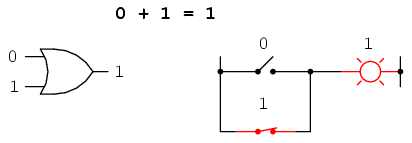
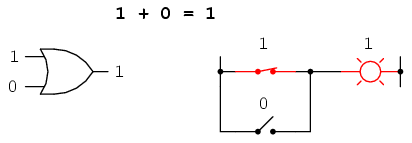
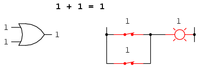
No existe la resta en el ámbito de las matemáticas booleanas. La resta implica la existencia de números negativos: 5 - 3 es lo mismo que 5 + (-3), y en álgebra de Boole las cantidades negativas están prohibidas. Tampoco existe la división en matemáticas booleanas, ya que la división en realidad no es más que una resta compuesta, de la misma manera que la multiplicación es una suma compuesta.
La multiplicación es válida en álgebra booleana y, afortunadamente, es la misma que en álgebra de números reales: cualquier cosa multiplicada por 0 es 0, y cualquier cosa multiplicada por 1 permanece sin cambios:
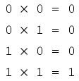
Este conjunto de ecuaciones también debería resultarle familiar: es el mismo patrón que se encuentra en la tabla de verdad para una puerta AND. En otras palabras, la multiplicación booleana corresponde a la función lógica de una puerta "Y", así como a los contactos de conmutación en serie:
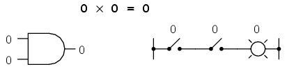
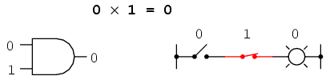
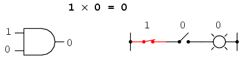
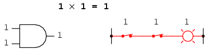
Al igual que el álgebra "normal", el álgebra booleana utiliza letras alfabéticas para indicar variables. Sin embargo, a diferencia del álgebra "normal", las variables booleanas son siempre letras MAYÚSCULAS, nunca minúsculas. Debido a que se les permite poseer sólo uno de dos valores posibles, ya sea 1 o 0, todas y cada una de las variables tienen uncomplementar: lo contrario de su valor. Por ejemplo, si la variable "A" tiene un valor de 0, entonces el complemento de A tiene un valor de 1. La notación booleana utiliza una barra encima del carácter de la variable para indicar la complementación, así:
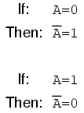
En forma escrita, el complemento de "A" se denota como "A-not" o "A-bar". A veces se utiliza un símbolo "principal" para representar la complementación. Por ejemplo, A' sería el complemento de A, muy parecido a usar un símbolo primo para denotar diferenciación en cálculo en lugar de la notación fraccionaria d/dt. Sin embargo, normalmente el símbolo de "barra" encuentra un uso más extendido que el símbolo de "principal", por razones que serán más evidentes más adelante en este capítulo.
La complementación booleana encuentra equivalencia en la forma de la puerta NOT, o un interruptor o contacto de relé normalmente cerrado:
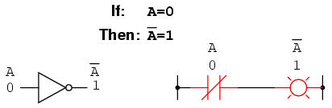
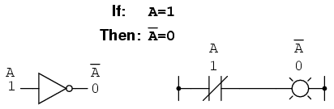
La definición básica de cantidades booleanas ha conducido a reglas simples de suma y multiplicación, y ha excluido tanto la resta como la división como operaciones aritméticas válidas. Tenemos una simbología para denotar variables booleanas y sus complementos. En la siguiente sección procederemos a desarrollar identidades booleanas.
- REVISAR:
- La suma booleana es equivalente a laORfunción lógica, así comoparalelocontactos del interruptor.
- La multiplicación booleana es equivalente a laANDfunción lógica, así comoseriecontactos del interruptor.
- La complementación booleana es equivalente a laNOTfunción lógica, así comonormalmente cerradocontactos de relevo.
Boolean algebraic identities
En matemáticas, unidentidades una afirmación verdadera para todos los valores posibles de su variable o variables. La identidad algebraica de x + 0 = x nos dice que cualquier cosa (x) sumada a cero es igual al "cualquier cosa" original, sin importar el valor que pueda tener ese "cualquier cosa" (x). Al igual que el álgebra ordinaria, el álgebra booleana tiene sus propias identidades únicas basadas en los estados bivalentes de las variables booleanas.
La primera identidad booleana es que la suma de cualquier cosa y cero es la misma que la "cualquier cosa" original. Esta identidad no es diferente de su equivalente algebraico de números reales:
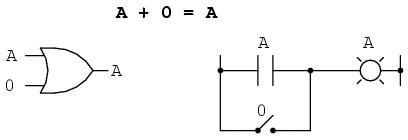
No importa cuál sea el valor de A, la salida siempre será la misma: cuando A=1, la salida también será 1; cuando A = 0, la salida también será 0.
La próxima identidad es definitivamentediferentede cualquiera visto en álgebra normal. Aquí descubrimos que la suma de cualquier cosa y uno es uno:
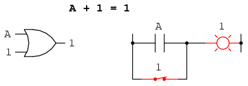
No importa cuál sea el valor de A, la suma de A y 1 siempre será 1. En cierto sentido, la señal "1"anulael efecto de A en el circuito lógico, dejando la salida fija en un nivel lógico de 1.
A continuación, examinamos el efecto de sumar A y A, que es lo mismo que conectar ambas entradas de una puerta OR entre sí y activarlas con la misma señal:
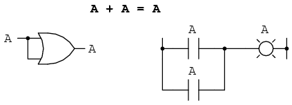
En álgebra de números reales, la suma de dos variables idénticas es el doble del valor de la variable original (x + x = 2x), pero recuerda que no existe el concepto de "2" en el mundo de las matemáticas booleanas, sólo 1 y 0, por lo que no podemos decir que A + A = 2A. Así, cuando sumamos una cantidad booleana a sí misma, la suma es igual a la cantidad original: 0 + 0 = 0, y 1 + 1 = 1.
Al introducir el concepto exclusivamente booleano de complementación en una identidad aditiva, encontramos un efecto interesante. Dado que debe haber un valor "1" entre cualquier variable y su complemento, y dado que la suma de cualquier cantidad booleana y 1 es 1, la suma de una variable y su complemento debe ser 1:
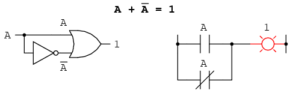
Así como hay cuatro identidades aditivas booleanas (A+0, A+1, A+A y A+A'), también hay cuatro identidades multiplicativas: Ax0, Ax1, AxA y AxA'. De éstas, las dos primeras no son diferentes de sus expresiones equivalentes en álgebra regular:
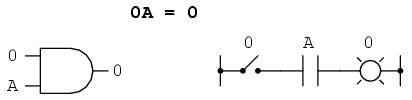
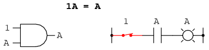
La tercera identidad multiplicativa expresa el resultado de una cantidad booleana multiplicada por sí misma. En álgebra normal, el producto de una variable por sí misma es elcuadradode esa variable (3 x 3 = 32= 9). Sin embargo, el concepto de "cuadrado" implica una cantidad de 2, lo cual no tiene significado en el álgebra booleana, por lo que no podemos decir que A x A = A2. En cambio, encontramos que el producto de una cantidad booleana y ella misma es la cantidad original, ya que 0 x 0 = 0 y 1 x 1 = 1:
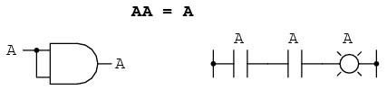
La cuarta identidad multiplicativa no tiene equivalente en álgebra regular porque utiliza el complemento de una variable, un concepto exclusivo de las matemáticas booleanas. Dado que debe haber un valor "0" entre cualquier variable y su complemento, y dado que el producto de cualquier cantidad booleana y 0 es 0, el producto de una variable y su complemento debe ser 0:
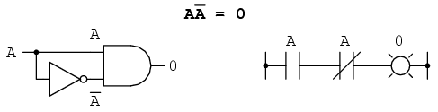
Entonces, para resumir, tenemos cuatro identidades booleanas básicas para la suma y cuatro para la multiplicación:
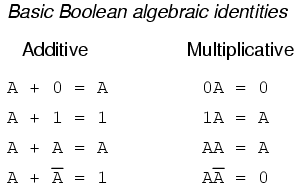
Otra identidad que tiene que ver con la complementación es la deldoble complemento: una variable invertida dos veces. Complementar una variable dos veces (o cualquier número par de veces) da como resultado el valor booleano original. Esto es análogo a negar (multiplicar por -1) en álgebra de números reales: un número par de negaciones se cancelan para dejar el valor original:
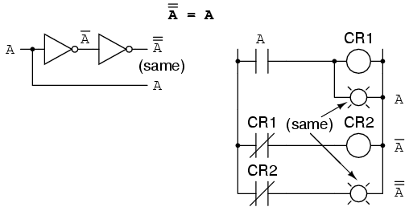
Boolean algebraic properties
Otro tipo de identidad matemática, llamada "propiedad" o "ley", describe cómo las diferentes variables se relacionan entre sí en un sistema de números. Una de estas propiedades se conoce comopropiedad conmutativa, y se aplica igualmente a la suma y la multiplicación. En esencia, la propiedad conmutativa nos dice que podemos invertir el orden de las variables que se suman o multiplican sin cambiar la verdad de la expresión:
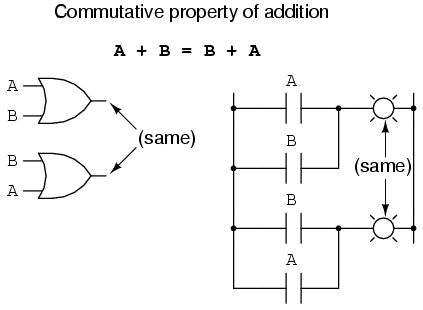
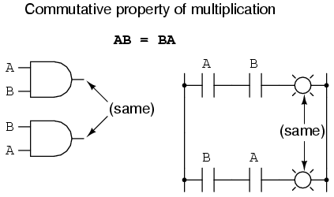
Junto con las propiedades conmutativas de la suma y la multiplicación, tenemos laspropiedad asociativa, nuevamente aplicándose igualmente bien a la suma y la multiplicación. Esta propiedad nos dice que podemos asociar grupos de variables sumadas o multiplicadas entre paréntesis sin alterar la verdad de las ecuaciones.
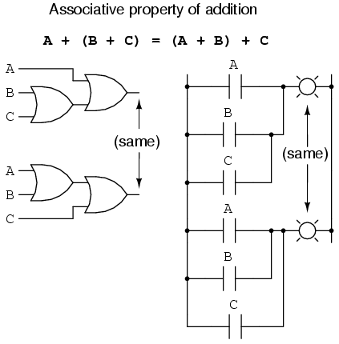
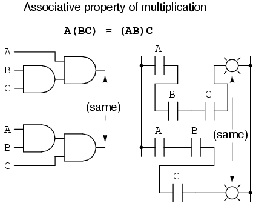
Por último, tenemos elpropiedad distributiva, que ilustra cómo expandir una expresión booleana formada por el producto de una suma y, a la inversa, nos muestra cómo se pueden factorizar los términos a partir de sumas de productos booleanas:
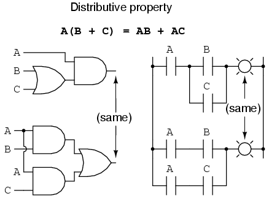
Para resumir, aquí están las tres propiedades básicas: conmutativa, asociativa y distributiva.
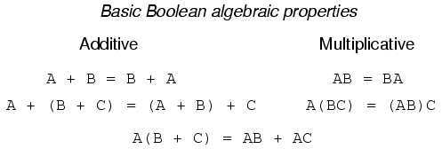
Boolean rules for simplification
El álgebra de Boole encuentra su uso más práctico en la simplificación de circuitos lógicos. Si traducimos la función de un circuito lógico a forma simbólica (booleana) y aplicamos ciertas reglas algebraicas a la ecuación resultante para reducir el número de términos y/u operaciones aritméticas, la ecuación simplificada puede volver a traducirse a forma de circuito para un circuito lógico que realiza la misma función con menos componentes. Si se puede lograr una función equivalente con menos componentes, el resultado será una mayor confiabilidad y un menor costo de fabricación.
Con este fin, en esta sección se presentan varias reglas del álgebra booleana para usar en la reducción de expresiones a sus formas más simples. Las identidades y propiedades ya revisadas en este capítulo son muy útiles en la simplificación booleana y, en su mayor parte, guardan similitud con muchas identidades y propiedades del álgebra "normal". Sin embargo, las reglas que se muestran en esta sección son exclusivas de las matemáticas booleanas.
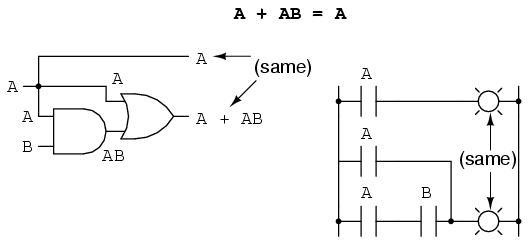
Esta regla se puede probar simbólicamente factorizando una "A" a partir de los dos términos y luego aplicando las reglas de A + 1 = 1 y 1A = A para lograr el resultado final:
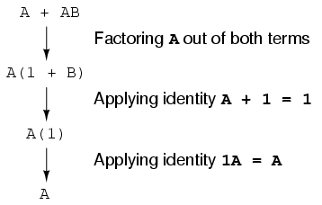
Tenga en cuenta cómo se usó la regla A + 1 = 1 para reducir el término (B + 1) a 1. Cuando una regla como "A + 1 = 1" se expresa usando la letra "A", no significa que solo se aplica a expresiones que contienen "A". Lo que significa "A" en una regla como A + 1 = 1 esanyVariable booleana o colección de variables. Este es quizás el concepto más difícil de dominar para los nuevos estudiantes en simplificación booleana: aplicar identidades, propiedades y reglas estandarizadas a expresiones que no están en forma estándar.
Por ejemplo, la expresión booleana ABC + 1 también se reduce a 1 mediante la identidad "A + 1 = 1". En este caso, reconocemos que el término "A" en la forma estándar de la identidad puede representar el término "ABC" completo en la expresión original.
La siguiente regla parece similar a la primera que se muestra en esta sección, pero en realidad es bastante diferente y requiere una demostración más inteligente:
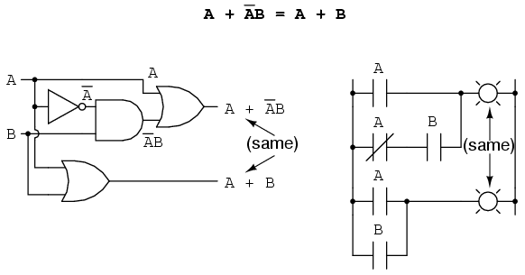
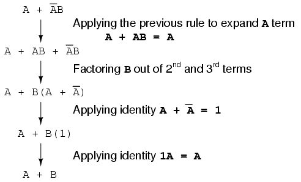
Observe cómo la última regla (A + AB = A) se usa para "dessimplificar" el primer término "A" en la expresión, cambiando "A" por "A + AB". Si bien esto puede parecer un paso atrás, ¡ciertamente ayudó a reducir la expresión a algo más simple! A veces en matemáticas debemos dar pasos "hacia atrás" para lograr la solución más elegante. Saber cuándo dar ese paso y cuándo no es parte del arte del álgebra, del mismo modo que una victoria en una partida de ajedrez casi siempre requiere sacrificios calculados.
Otra regla implica la simplificación de una expresión de producto de sumas:
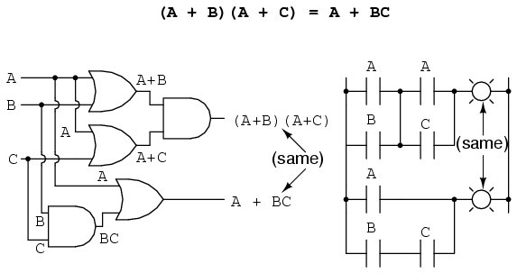
Y, la prueba correspondiente:
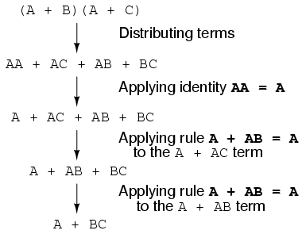
Para resumir, aquí están las tres nuevas reglas de simplificación booleana expuestas en esta sección:
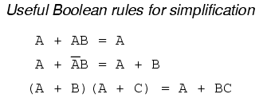
Circuit simplification examples
Comencemos con un circuito de puerta semiconductor que necesita simplificación. Se supone que las señales de entrada "A", "B" y "C" provienen de interruptores, sensores o quizás otros circuitos de puerta. El lugar donde se originan estas señales no es de importancia en la tarea de reducción de puerta.
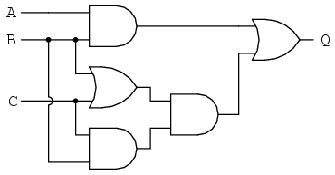
Nuestro primer paso en la simplificación debe ser escribir una expresión booleana para este circuito. Esta tarea se realiza fácilmente paso a paso si comenzamos escribiendo subexpresiones en la salida de cada puerta, correspondientes a las respectivas señales de entrada para cada puerta. Recuerde que las puertas OR son equivalentes a la suma booleana, mientras que las puertas AND son equivalentes a la multiplicación booleana. Por ejemplo, escribiré subexpresiones en las salidas de las tres primeras puertas:
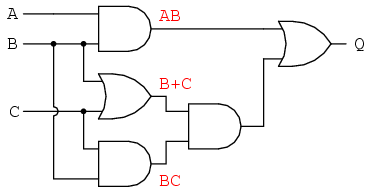
. . . luego otra subexpresión para la siguiente puerta:
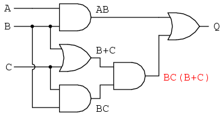
Finalmente, se ve que la salida ("Q") es igual a la expresión AB + BC(B + C):
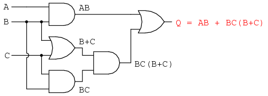
Ahora que tenemos una expresión booleana con la que trabajar, necesitamos aplicar las reglas del álgebra booleana para reducir la expresión a su forma más simple (la más simple se define como la que requiere la menor cantidad de puertas para implementar):
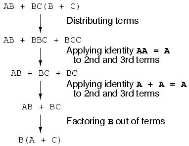
La expresión final, B(A + C), es mucho más simple que la original, pero realiza la misma función. Si desea verificar esto, puede generar una tabla de verdad para ambas expresiones y determinar el estado de Q (la salida de los circuitos) para las ocho combinaciones de estados lógicos de A, B y C, para ambos circuitos. Las dos tablas de verdad deberían ser idénticas.
Ahora debemos generar un diagrama esquemático a partir de esta expresión booleana. Para hacer esto, evalúe la expresión, siguiendo el orden matemático adecuado de las operaciones (multiplicación antes de la suma, operaciones entre paréntesis antes que nada) y dibuje puertas para cada paso. Recuerde nuevamente que las puertas OR son equivalentes a la suma booleana, mientras que las puertas AND son equivalentes a la multiplicación booleana. En este caso, comenzaríamos con la subexpresión "A + C", que es una puerta OR:
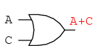
El siguiente paso para evaluar la expresión "B(A + C)" es multiplicar (puerta AND) la señal B por la salida de la puerta anterior (A + C):
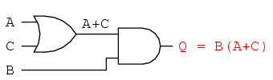
Obviamente, este circuito es mucho más simple que el original, ya que tiene sólo dos puertas lógicas en lugar de cinco. Esta reducción de componentes da como resultado una mayor velocidad de funcionamiento (menos tiempo de retardo desde la transición de la señal de entrada a la transición de la señal de salida), menos consumo de energía, menos costo y mayor confiabilidad.
Los circuitos de relés electromecánicos, que suelen ser más lentos, consumir más energía eléctrica para funcionar, costar más y tener una vida media más corta que sus homólogos semiconductores, se benefician enormemente de la simplificación booleana. Consideremos un circuito de ejemplo:
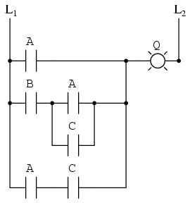
Como antes, nuestro primer paso para reducir este circuito a su forma más simple debe ser desarrollar una expresión booleana a partir del esquema. La forma más sencilla que he encontrado para hacer esto es seguir los mismos pasos que normalmente seguiría para reducir una red de resistencias en serie-paralelo a una resistencia única y total. Por ejemplo, examine la siguiente red de resistencias con sus resistencias dispuestas en el mismo patrón de conexión que los contactos de relé en el circuito anterior y la fórmula de resistencia total correspondiente:
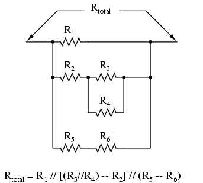
Recuerde que los contactos paralelos equivalen a la suma booleana, mientras que los contactos en serie equivalen a la multiplicación booleana. Escriba una expresión booleana para este circuito de contacto de relé, siguiendo el mismo orden de precedencia que seguiría para reducir una red de resistencias en serie-paralelo a una resistencia total. Puede resultar útil escribir una subexpresión booleana a la izquierda de cada "peldaño" de la escalera para ayudar a organizar la escritura de expresiones:
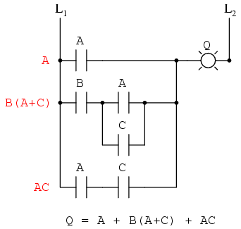
Ahora que tenemos una expresión booleana con la que trabajar, necesitamos aplicar las reglas del álgebra booleana para reducir la expresión a su forma más simple (definida como la que requiere la menor cantidad de contactos de relé para implementar):
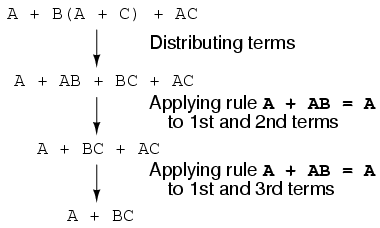
Los más inclinados a las matemáticas deberían poder ver que los dos pasos que emplean la regla "A + AB = A" pueden combinarse en un solo paso, siendo la regla ampliable a: "A + AB + AC + AD +... = A".
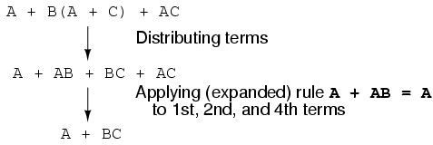
Como puedes ver, el circuito reducido es mucho más simple que el original, pero realiza la misma función lógica:
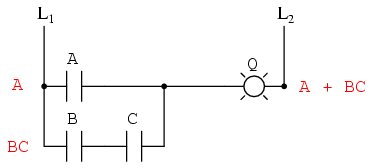
- REVISAR:
- Para convertir un circuito de puerta en una expresión booleana, etiquete cada salida de puerta con una subexpresión booleana correspondiente a las señales de entrada de las puertas, hasta que se alcance una expresión final en la última puerta.
- Para convertir una expresión booleana en un circuito de puerta, evalúe la expresión usando el orden estándar de operaciones: multiplicación antes de la suma y operaciones entre paréntesis antes que nada.
- Para convertir un circuito lógico de escalera en una expresión booleana, etiquete cada peldaño con una subexpresión booleana correspondiente a las señales de entrada de los contactos, hasta alcanzar una expresión final en la última bobina o luz. Para determinar el orden correcto de evaluación, trate los contactos como si fueran resistencias y como si estuviera determinando la resistencia total de la red serie-paralelo formada por ellos. En otras palabras, busque contactos que seandirectamenteen serie odirectamenteprimero en paralelo entre sí, luego "colapsarlos" en subexpresiones booleanas equivalentes antes de continuar con otros contactos.
- Para convertir una expresión booleana en un circuito lógico de escalera, evalúe la expresión usando el orden estándar de operaciones: multiplicación antes de la suma y operaciones entre paréntesis antes que cualquier otra cosa.
The Exclusive-OR function
Un elemento que notoriamente falta en el conjunto de operaciones booleanas es el OR exclusivo. Mientras que la función O es equivalente a la suma booleana, la función Y a la multiplicación booleana y la función NO (inversora) a la complementación booleana, no existe un equivalente booleano directo para O exclusivo. Sin embargo, esto no ha impedido que la gente desarrolle un símbolo para representarlo:
Este símbolo rara vez se usa en expresiones booleanas porque las identidades, leyes y reglas de simplificación que involucran suma, multiplicación y complementación no se aplican a él. Sin embargo, existe una manera de representar la función OR Exclusivo en términos de OR y AND, como se ha mostrado en capítulos anteriores: AB' + A'B
Como equivalencia booleana, esta regla puede resultar útil para simplificar algunas expresiones booleanas. Cualquier expresión que siga la forma AB' + A'B (dos puertas AND y una puerta OR) puede sustituirse por una única puerta OR exclusiva.
DeMorgan's Theorems
Un matemático llamado DeMorgan desarrolló un par de reglas importantes sobre la complementación de grupos en el álgebra de Boole. Porgrupocomplementación, me refiero al complemento de un grupo de términos, representado por una barra larga sobre más de una variable.
Debe recordar del capítulo sobre puertas lógicas que invertir todas las entradas en una puerta invierte la función esencial de esa puerta de Y a O, o viceversa, y también invierte la salida. Entonces, una puerta OR con todas las entradas invertidas (una puerta OR negativa) se comporta igual que una puerta NAND, y una puerta AND con todas las entradas invertidas (una puerta AND negativa) se comporta igual que una puerta NOR. Los teoremas de DeMorgan establecen la misma equivalencia en forma "hacia atrás": que invertir la salida de cualquier puerta da como resultado la misma función que el tipo opuesto de puerta (Y versus O) con entradas invertidas:
Una barra larga que se extiende sobre el término AB actúa como un símbolo de agrupación y, como tal, es completamente diferente del producto de A y B invertidos independientemente. En otras palabras, (AB)' no es igual a A'B'. Debido a que el símbolo "principal" (') no se puede extender sobre dos variables como lo hace una barra, nos vemos obligados a usar paréntesis para que se aplique al término completo AB en la oración anterior. Una barra, sin embargo, actúa como su propio símbolo de agrupación cuando se extiende sobre más de una variable. Esto tiene un profundo impacto en cómo se evalúan y reducen las expresiones booleanas, como veremos.
El teorema de DeMorgan puede considerarse en términos deroturaun símbolo de barra larga. Cuando se rompe una barra larga, la operación directamente debajo de la ruptura cambia de suma a multiplicación, o viceversa, y los trozos de barra rotos permanecen sobre las variables individuales. Para ilustrar:
Cuando existen múltiples "capas" de barras en una expresión, sólo puedes dividiruna barra a la vez, y generalmente es más fácil comenzar la simplificación rompiendo primero la barra más larga (la superior). Para ilustrar, tomemos la expresión (A + (BC)')' y reduzcamosla usando los teoremas de DeMorgan:
Siguiendo el consejo de romper primero la barra más larga (la superior), comenzaré rompiendo la barra que cubre toda la expresión como primer paso:
Como resultado, el circuito original se reduce a una puerta AND de tres entradas con la entrada A invertida:
Deberíanuncarompa más de una barra en un solo paso, como se ilustra aquí:
Por muy tentador que sea conservar pasos y romper más de una barra a la vez, a menudo conduce a un resultado incorrecto, ¡así que no lo hagas!
Es posible reducir adecuadamente esta expresión rompiendo primero la barra corta, en lugar de la larga primero:
El resultado final es el mismo, pero se requieren más pasos en comparación con el primer método, donde se rompía primero la barra más larga. Observe cómo en el tercer paso rompimos la barra larga en dos lugares. ¡Esta es una operación matemática legítima y no es lo mismo que romper dos barras en un solo paso! La prohibición de romper más de una barra en un solo paso esnotuna prohibición de romper una barra en más de un lugar. Rompiendo en más de unolugaren un solo paso está bien; rompiendo más de unobaren un solo paso no lo es.
Quizás se pregunte por qué se colocaron paréntesis alrededor de la subexpresión B' + C', considerando el hecho de que los eliminé en el siguiente paso. Hice esto para enfatizar un aspecto importante pero que fácilmente se pasa por alto del teorema de DeMorgan. Dado que una barra larga funciona como símbolo de agrupación, las variables anteriormente agrupadas por una barra quebrada deben permanecer agrupadas para que no se pierda la precedencia adecuada (orden de operación). En este ejemplo, realmente no importaría si me olvidara de poner paréntesis después de romper la barra corta, pero en otros casos sí podría hacerlo. Considere este ejemplo, comenzando con una expresión diferente:
Como puedes ver, mantener la agrupación que implican las barras de complementación para esta expresión es crucial para obtener la respuesta correcta.
Apliquemos los principios de los teoremas de DeMorgan a la simplificación de un circuito de puerta:
Como siempre, nuestro primer paso para simplificar este circuito debe ser generar una expresión booleana equivalente. Podemos hacer esto colocando una etiqueta de subexpresión en la salida de cada puerta, a medida que se conocen las entradas. Este es el primer paso de este proceso:
A continuación, podemos etiquetar las salidas de la primera puerta NOR y la puerta NAND. Cuando trato con puertas de salida invertida, me resulta más fácil escribir una expresión para la salida de la puerta.sinla inversión final, con una flecha que apunta justo antes de la burbuja de inversión. Luego, en el cable que sale de la puerta (después de la burbuja), escribo la expresión completa y complementada. Esto ayuda a garantizar que no olvide una barra complementaria en la subexpresión, al obligarme a dividir la tarea de escritura de la expresión en dos pasos:
Finalmente, escribimos una expresión (o un par de expresiones) para la última puerta NOR:
Ahora, reducimos esta expresión usando las identidades, propiedades, reglas y teoremas (de DeMorgan) del álgebra de Boole:
El circuito de puerta equivalente para esta expresión muy simplificada es el siguiente:
- REVISAR
- Los teoremas de DeMorgan describen la equivalencia entre puertas con entradas invertidas y puertas con salidas invertidas. En pocas palabras, una puerta NAND es equivalente a una puerta O negativo, y una puerta NOR es equivalente a una puerta Y negativo.
- Al "romper" una barra de complementación en una expresión booleana, la operación directamente debajo de la ruptura (suma o multiplicación) se invierte y las piezas de la barra rota permanecen sobre los términos respectivos.
- A menudo es más fácil abordar un problema rompiendo la barra más larga (la superior) antes de romper las barras debajo de ella. Usted debenunca¡Intenta romper dos barras en un solo paso!
- Las barras de complementación funcionan como símbolos de agrupación. Por lo tanto, cuando una barra se rompe, los términos que se encuentran debajo de ella deben permanecer agrupados. Se pueden colocar paréntesis alrededor de estos términos agrupados para ayudar a evitar cambios de precedencia.
Converting truth tables into Boolean expressions
Al diseñar circuitos digitales, el diseñador suele comenzar con una tabla de verdad que describe lo que debería hacer el circuito. La tarea de diseño consiste en gran medida en determinar qué tipo de circuito realizará la función descrita en la tabla de verdad. Si bien algunas personas parecen tener una habilidad natural para mirar una tabla de verdad e imaginar inmediatamente la puerta lógica o el circuito lógico de relé necesario para la tarea, existen técnicas de procedimiento disponibles para el resto de nosotros. Aquí, el álgebra de Boole demuestra su utilidad de la manera más espectacular.
Para ilustrar este método de procedimiento, debemos comenzar con un problema de diseño realista. Supongamos que nos encargan diseñar un circuito de detección de llamas para un incinerador de residuos tóxicos. El intenso calor del fuego tiene como objetivo neutralizar la toxicidad de los residuos introducidos en el incinerador. Estas técnicas basadas en la combustión se utilizan habitualmente para neutralizar los desechos médicos, que pueden estar infectados con virus o bacterias mortales:
Mientras se mantenga una llama en el incinerador, es seguro inyectar residuos en él para neutralizarlos. Sin embargo, si la llama se extinguiera, no sería seguro continuar inyectando desechos en la cámara de combustión, ya que saldrían del escape sin neutralizar y representarían una amenaza para la salud de cualquier persona que se encuentre cerca del escape. Lo que necesitamos en este sistema es una forma segura de detectar la presencia de una llama y permitir que se inyecten residuos sólo si el sistema de detección de llama "prueba" la presencia de una llama.
Existen varias tecnologías diferentes de detección de llamas: óptica (detección de luz), térmica (detección de alta temperatura) y conducción eléctrica (detección de partículas ionizadas en el camino de la llama), cada una con sus ventajas y desventajas únicas. Supongamos que debido al alto grado de peligro que implica la posibilidad de pasar desechos no neutralizados por el escape de este incinerador, se decide que el sistema de detección de llamas se haga redundante (múltiples sensores), de modo que la falla de un solo sensor no provoque una emisión de toxinas por el escape. Cada sensor viene equipado con un contacto normalmente abierto (abierto si no hay llama, cerrado si se detecta llama) que utilizaremos para activar las entradas de un sistema lógico:
Nuestra tarea, ahora, es diseñar el circuito del sistema lógico para abrir la válvula de desperdicio si y solo si los sensores demuestran que la llama es buena. Sin embargo, primero debemos decidir cuál debería ser el comportamiento lógico de este sistema de control. ¿Queremos que se abra la válvula si sólo uno de los tres sensores detecta llama? Probablemente no, porque esto anularía el propósito de tener múltiples sensores. Si cualquiera de los sensores fallara de tal manera que indicara falsamente la presencia de llama cuando no la había, un sistema lógico basado en el principio de "cualquiera de tres sensores muestra llama" daría el mismo resultado que daría un sistema de un solo sensor con la misma falla. Una solución mucho mejor sería diseñar el sistema de modo que se ordene a la válvula abrirse si y sólo silos tres sensoresdetectar una buena llama. De esta manera, cualquier sensor fallido que mostrara falsamente una llama no podría mantener la válvula en la posición abierta; más bien, sería necesario que los tres sensores fallaran de la misma manera (un escenario altamente improbable) para que se produjera esta peligrosa condición.
Por tanto, nuestra tabla de verdad quedaría así:
No se requiere mucha comprensión para darse cuenta de que esta funcionalidad podría generarse con una puerta AND de tres entradas: la salida del circuito será "alta" si y sólo si la entrada AANDentrada BANDla entrada C son todas "altas":
Si usamos circuitos de relé, podríamos crear esta función Y conectando tres contactos de relé en serie, o simplemente conectando los tres contactos de los sensores en serie, de modo que la única forma en que se pueda enviar energía eléctrica para abrir la válvula de desperdicio es si los tres sensores indican llama:
Si bien esta estrategia de diseño maximiza la seguridad, hace que el sistema sea muy susceptible a fallas de sensores del tipo opuesto. Supongamos que uno de los tres sensores fallara de tal manera que indicara que no hay llama cuando en realidad había una buena llama en la cámara de combustión del incinerador. Esa única falla cerraría la válvula de desechos innecesariamente, lo que resultaría en una pérdida de tiempo de producción y desperdicio de combustible (alimentando un fuego que no se estaba usando para incinerar desechos).
Sería bueno tener un sistema lógico que permitiera este tipo de falla sin apagar el sistema innecesariamente, pero aún así proporcionara redundancia de sensores para mantener la seguridad en caso de que algún sensor fallara "alto" (mostrando llama en todo momento, haya o no uno para detectar). Una estrategia que satisfaría ambas necesidades sería una lógica de sensor "dos de tres", mediante la cual la válvula de desperdicio se abre si al menos dos de los tres sensores muestran una buena llama. La tabla de verdad para dicho sistema sería la siguiente:
En este caso, no es necesariamente obvio qué tipo de circuito lógico satisfaría la tabla de verdad. Sin embargo, un método simple para diseñar dicho circuito se encuentra en una forma estándar de expresión booleana llamadaSuma de productos, oSOP, forma. Como puede sospechar, una expresión booleana de suma de productos es literalmente un conjunto de términos booleanos agregados (resumido) juntos, siendo cada término un multiplicativo (producto) combinación de variables booleanas. Un ejemplo de expresión SOP sería algo como esto: ABC + BC + DF, la suma de los productos "ABC", "BC" y "DF".
Las expresiones de suma de productos son fáciles de generar a partir de tablas de verdad. Todo lo que tenemos que hacer es examinar la tabla de verdad en busca de filas donde la salida sea "alta" (1) y escribir un término de producto booleano que equivaldría a un valor de 1 dadas esas condiciones de entrada. Por ejemplo, en la cuarta fila de la tabla de verdad de nuestro sistema lógico dos de tres, donde A=0, B=1 y C=1, el término del producto sería A'BC, ya que ese término tendría un valor de 1 si y sólo si A=0, B=1 y C=1:
Otras tres filas de la tabla de verdad tienen un valor de salida de 1, por lo que esas filas también necesitan expresiones de producto booleanos para representarlas:
Finalmente, unimos estas cuatro expresiones de productos booleanos mediante suma, para crear una única expresión booleana que describa la tabla de verdad en su conjunto:
Ahora que tenemos una expresión booleana de suma de productos para la función de la tabla de verdad, podemos diseñar fácilmente una puerta lógica o un circuito lógico de relé basado en esa expresión:
Desafortunadamente, ambos circuitos son bastante complejos y podrían beneficiarse de una simplificación. Utilizando técnicas de álgebra booleana, la expresión se puede simplificar significativamente:

Como resultado de la simplificación, ahora podemos construir circuitos lógicos mucho más simples que realicen la misma función, ya sea en forma de puerta o relé:

Cualquiera de estos circuitos realizará adecuadamente la tarea de operar la válvula de desechos del incinerador basándose en una verificación de llama de dos de los tres sensores de llama. Como mínimo, esto es lo que necesitamos para tener un sistema incinerador seguro. Sin embargo, podemos ampliar la funcionalidad del sistema añadiéndole circuitos lógicos diseñados para detectar si alguno de los sensores no concuerda con los otros dos.
Si los tres sensores funcionan correctamente, deberían detectar la llama con la misma precisión. Por lo tanto, todos deberían registrar "bajo" (000: sin llama) o todos registrar "alto" (111: buena llama). Cualquier otra combinación de salida (001, 010, 011, 100, 101 o 110) constituye un desacuerdo entre sensores y, por lo tanto, puede servir como indicador de una posible falla del sensor. Si agregamos circuitos para detectar cualquiera de las seis condiciones de "desacuerdo del sensor", podríamos usar la salida de ese circuito para activar una alarma. Quien esté monitoreando el incinerador deberá ejercer su criterio y continuar operando con un posible sensor defectuoso (entradas: 011, 101 o 110) o apagar el incinerador para estar absolutamente seguro. Además, si el incinerador está apagado (sin llama) y uno o más de los sensores todavía indica llama (001, 010, 011, 100, 101 o 110) mientras que los otros indican que no hay llama, se sabrá que existe un problema definitivo con el sensor.
El primer paso en el diseño de este circuito de detección de "desacuerdos de sensores" es escribir una tabla de verdad que describa su comportamiento. Como ya tenemos una tabla de verdad que describe la salida del circuito lógico de "buena llama", simplemente podemos agregar otra columna de salida a la tabla para representar el segundo circuito y hacer una tabla que represente todo el sistema lógico:
Si bien es posible generar una expresión de suma de productos para esta nueva columna de la tabla de verdad, ¡se necesitarían seis términos, de tres variables cada uno! Una expresión booleana de este tipo requeriría muchos pasos para simplificarse, con un gran potencial para cometer errores algebraicos:
Una alternativa a generar una expresión de suma de productos para tener en cuenta todas las condiciones de salida "altas" (1) en la tabla de verdad es generar unaProducto de sumas, oPOS, expresión, para tener en cuenta todas las condiciones de salida "bajas" (0). Dado que hay muchos menos casos de un resultado "bajo" en la última columna de la tabla de verdad, la expresión del Producto de sumas resultante debería contener menos términos. Como sugiere su nombre, una expresión de producto de sumas es un conjunto de términos agregados (sumas), que se multiplican (producto) juntos. Un ejemplo de expresión POS sería (A + B)(C + D), el producto de las sumas "A + B" y "C + D".
Para comenzar, identificamos qué filas en la última columna de la tabla de verdad tienen resultados "bajos" (0) y escribimos un término de suma booleano que sería igual a 0 para las condiciones de entrada de esa fila. Por ejemplo, en la primera fila de la tabla de verdad, donde A=0, B=0 y C=0, el término suma sería (A + B + C), ya que ese término tendría un valor de 0 si y sólo si A=0, B=0 y C=0:
Sólo otra fila en la última columna de la tabla de verdad tiene una salida "baja" (0), por lo que todo lo que necesitamos es un término de suma más para completar nuestra expresión de Producto de sumas. Este último término suma representa una salida 0 para una condición de entrada de A=1, B=1 y C=1. Por lo tanto, el término debe escribirse como (A' + B'+ C'), porque sólo la suma de loscomplementadolas variables de entrada serían iguales a 0 solo para esa condición:
La expresión completa del Producto de sumas, por supuesto, es la combinación multiplicativa de estos dos términos de suma:
Mientras que una expresión de suma de productos podría implementarse en forma de un conjunto de puertas AND con sus salidas conectadas a una única puerta OR, una expresión de producto de sumas se puede implementar como un conjunto de puertas OR que se alimentan de una única puerta AND:
En consecuencia, mientras que una expresión de suma de productos podría implementarse como una colección en paralelo de contactos de relé conectados en serie, una expresión de producto de sumas se puede implementar como una colección en serie de contactos de relé conectados en paralelo:
Los dos circuitos anteriores representan únicamente versiones diferentes del circuito lógico de "desacuerdo del sensor", no los circuitos de detección de "llama buena". Todo el sistema lógico sería la combinación de los circuitos de "llama buena" y "desacuerdo del sensor", que se muestran en el mismo diagrama.
Implementado en un controlador lógico programable (PLC), todo el sistema lógico podría parecerse a esto:
Como puede ver, tanto la forma booleana estándar de suma de productos como la de productos de sumas son herramientas poderosas cuando se aplican a tablas de verdad. Nos permiten derivar una expresión booleana (y, en última instancia, un circuito lógico real) a partir de nada más que una tabla de verdad, que es una especificación escrita de lo que queremos que haga un circuito lógico. Poder pasar de una especificación escrita a un circuito real utilizando procedimientos simples y deterministas significa que es posible automatizar el proceso de diseño de un circuito digital. En otras palabras, se podría programar una computadora para diseñar un circuito lógico personalizado a partir de una especificación de tabla de verdad. Los pasos a seguir desde una tabla de verdad hasta el circuito final son tan inequívocos y directos que se requiere poca o ninguna creatividad u otro pensamiento original para ejecutarlos.
- REVISAR:
- Suma de productos, oSOP, Se pueden generar expresiones booleanas a partir de tablas de verdad con bastante facilidad, determinando qué filas de la tabla tienen un resultado de 1, escribiendo un término de producto para cada fila y finalmente sumando todos los términos de producto. Esto crea una expresión booleana que representa la tabla de verdad en su conjunto.
- Las expresiones de suma de productos se prestan bien a la implementación como un conjunto de puertas AND (productos) que se alimentan de una sola puerta OR (suma).
- Producto de sumas, oPOS, Las expresiones booleanas también se pueden generar a partir de tablas de verdad con bastante facilidad, determinando qué filas de la tabla tienen un resultado de 0, escribiendo un término de suma para cada fila y finalmente multiplicando todos los términos de suma. Esto crea una expresión booleana que representa la tabla de verdad en su conjunto.
- Las expresiones de producto de sumas se prestan bien a la implementación como un conjunto de puertas OR (sumas) que se alimentan de una sola puerta AND (producto).
Lecciones en circuitos eléctricoscopyright (C) 2000-2023 Tony R. Kuphaldt, según los términos y condiciones delCC BY License.